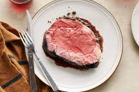

Prime Rib

Prime rib is an extremely tender, unbelievably juicy cut of beef with a bold flavor that needs no
dressing up. In fact, cooking prime rib is one of the easiest things you can do in the kitchen.
Here's all you need to know to make the perfect prime rib.
- 4 lb. prime rib roast (For smaller or larger roasts, refer to the formula above.)
- ¼ cup unsalted butter, softened
- 1 tablespoon freshly ground black pepper
- 1 teaspoon herbes de Provence
- kosher salt
- Bring the rib roast to room temperature.
- Preheat oven to 500 degrees F.
- Season with butter, pepper, and herbes.
- Roast for 20 minutes.
- Let it rest for two hours in the oven with the doors closed.